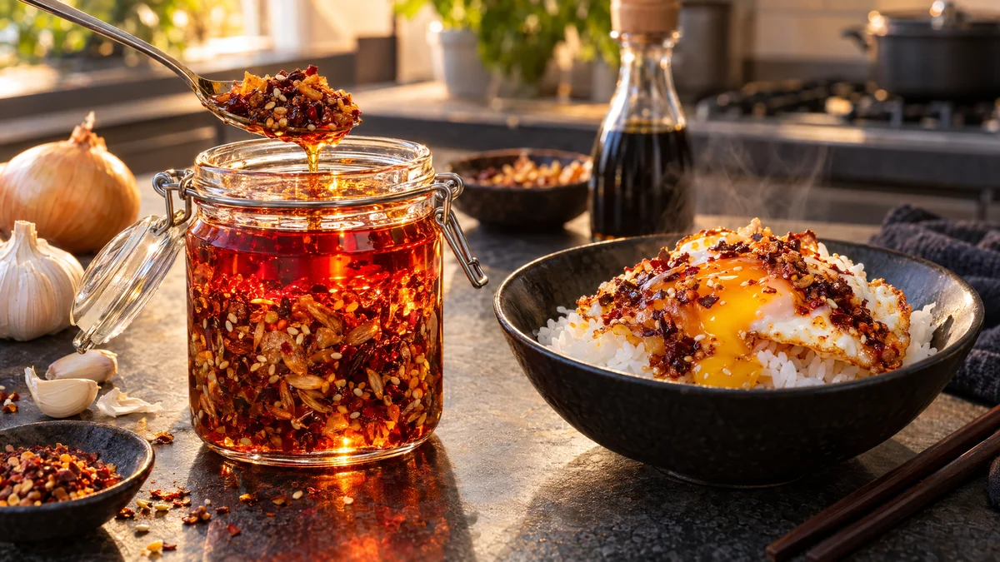

RESTFEST · RECEPTSåser & röror
Krispig chiliolja med vitlök, lök och sesam
En gul lök, ett helt vitlökshuvud och chiliflakesen i kryddhyllan steks långsamt i olja tills de blir gyllene och knapriga. Allt blandas med sesamfrön, soja och socker till en glödande röd, krispig chiliolja. En sked lyfter allt från stekta ägg och ris till nudlar och soppor.
- Förberedelse
- 15 min
- Tillagning
- 25 min + 1 tim dragtid
- Portioner
- ca 3 dl
- Nivå
- Medelsvårt
 Det här behöver du
Det här behöver du
Tryck på + vid det du behöver köpa.
Gör så här
- Blanda chiliflakes, paprikapulver, sesamfrön, socker och salt i en värmetålig skål av glas eller rostfritt stål.
- Skala löken och vitlöken. Skiva löken mycket tunt, gärna med mandolin. Hacka vitlöken fint och riv ingefäran.
- Häll oljan i en kastrull och lägg i löken och kanelstången. Stek på medellåg värme och rör ofta, i 12–15 minuter, tills löken är gyllenbrun. Lyft upp löken med en hålslev och lägg den på hushållspapper. Den blir krispig när den svalnar.
- Lägg vitlöken och ingefäran i samma olja och stek på låg värme i 3–5 minuter, tills vitlöken är ljust gyllene. Den mörknar snabbt och blir bitter, så ta hellre upp den för tidigt än för sent.
- Ta upp kanelstången och låt oljan svalna i 2 minuter. Den ska fortfarande fräsa när den möter chilin, men inte vara så het att chilin svartnar.
- Häll oljan över chiliblandningen i omgångar och rör om. Det fräser och doftar.
- Låt svalna i 10 minuter. Rör ner den krispiga löken, vitlöken och sojan.
- Fyll oljan i en ren glasburk med lock och låt den dra i minst en timme, så att smakerna går ihop.
Dekoration och servering
- Använd små glasburkar så att lagren syns, med röd olja överst och allt krispigt i botten. Rör om före varje användning.
- Ställ burken på bordet med en liten sked, som tillbehör till nästan allt.
- Gott på stekta ägg, ris, nudlar, dumplings, linssoppan i recept 32 och avokadomacka.
- Förvara burken i kylen och använd oljan inom en månad. Ta alltid med en ren sked.
- Fint att ge bort, med en handskriven etikett som varnar för styrkan.
Mått och ugnstemperaturer
Måtten är svenska (dl, msk, tsk, krm). Ugnstemperaturerna gäller vanlig ugn med över- och undervärme; med varmluft, sänk med 20 grader.